StrayKids Pop-up
Content Production
From Screen To Experience
StrayKids 오프라인 팝업을 위한 디지털 영상 콘텐츠를 제작했습니다.
공간 내 대형 스크린 영상부터 팬들이 아티스트와 함께 사진을 촬영할 수 있는 참여형 콘텐츠까지,
팝업 경험을 확장하는 다양한 비주얼을 구현했습니다.
콘텐츠가 실제 공간과 만나는 순간
스크린 속 영상이 실제 공간과 만나며, 팬들이 아티스트를 경험하는 방식도 확장됩니다.
팝업 내부의 대형 스크린과 다양한 디지털 접점에 콘텐츠를 적용해,
영상이 단순한 감상 대상을 넘어 오프라인 공간에서 아티스트를 만나는 경험으로 이어지도록 했습니다.
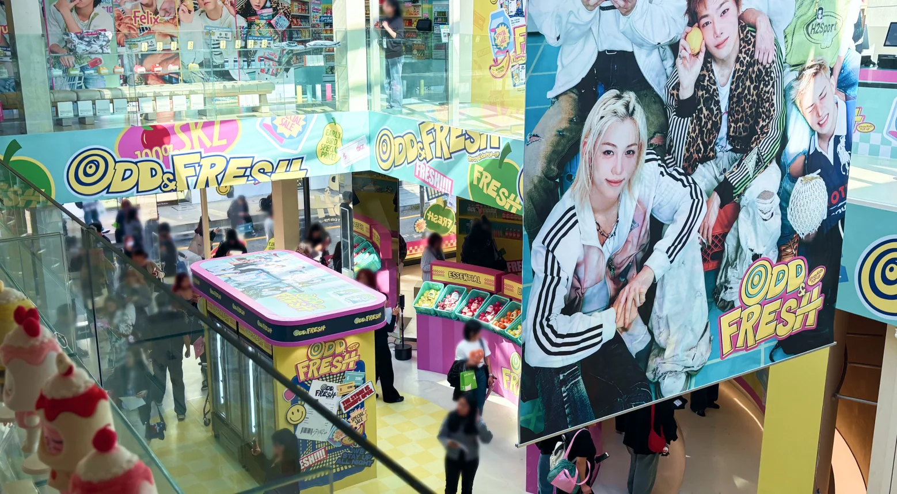
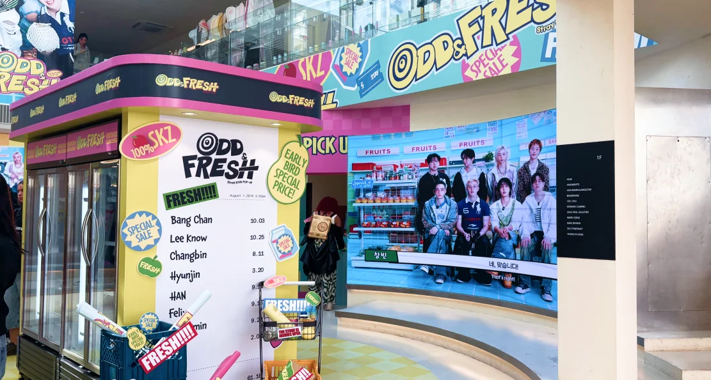
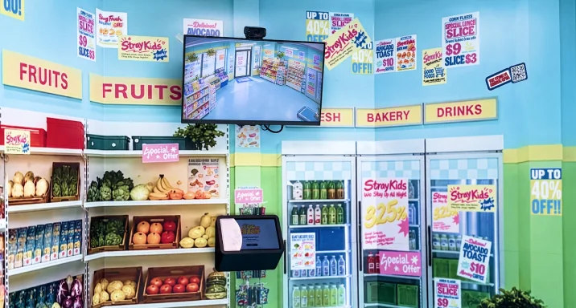
Closer to StrayKids
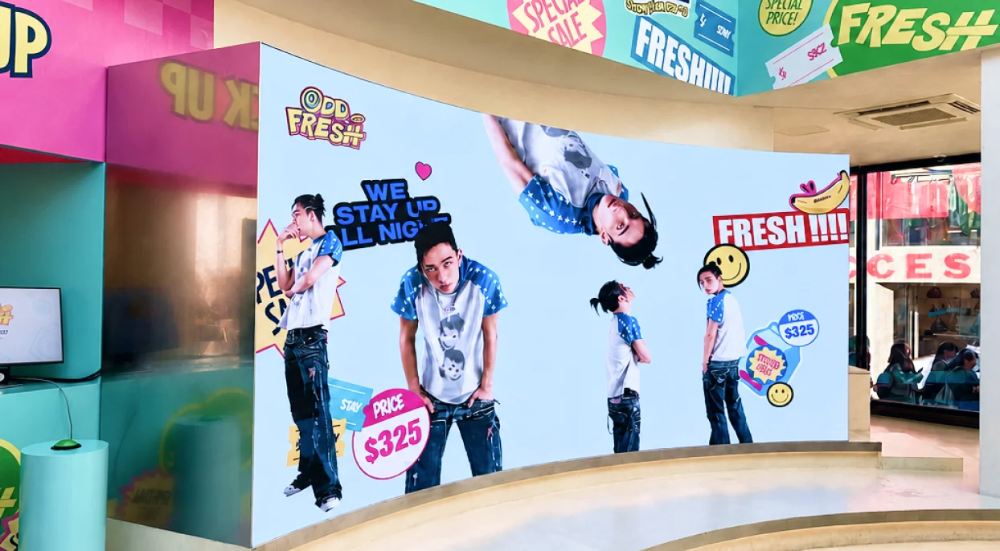
Made to Move
크로마키 촬영 소스를 활용해 멤버들이 스티커처럼 자유롭게 움직이는 콘셉트 영상을 제작했습니다.
경쾌한 움직임과 그래픽적인 연출로 팝업의 유쾌한 분위기를 표현했습니다.
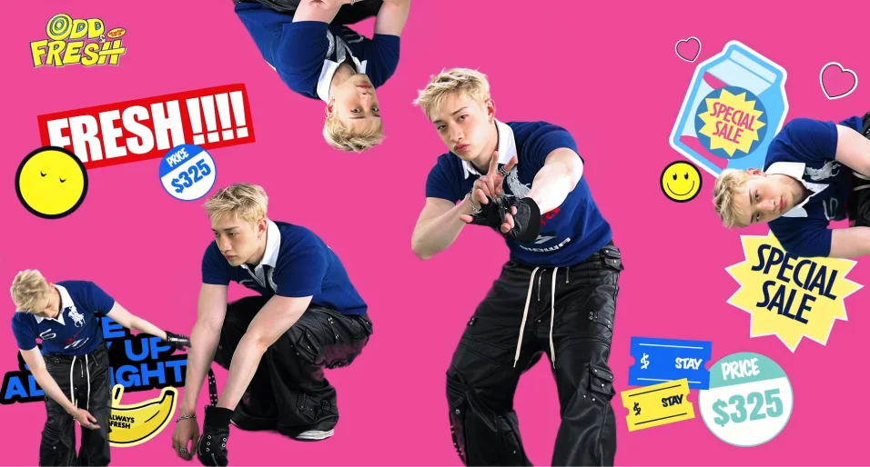
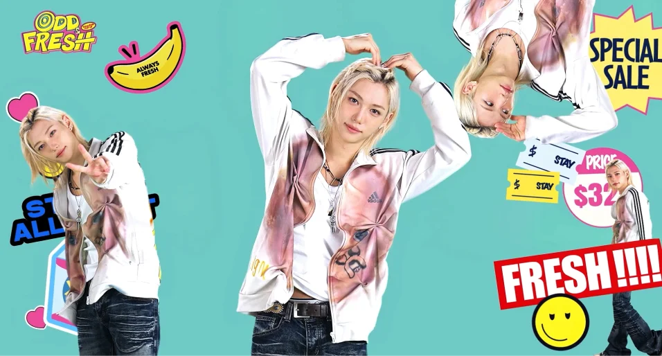
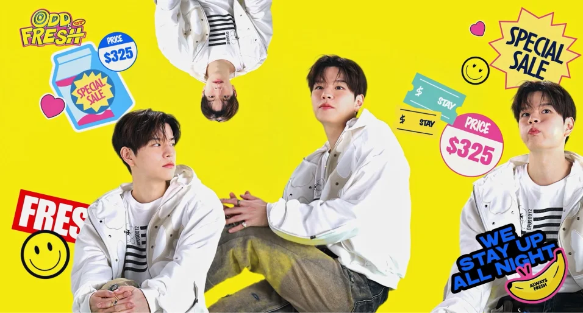
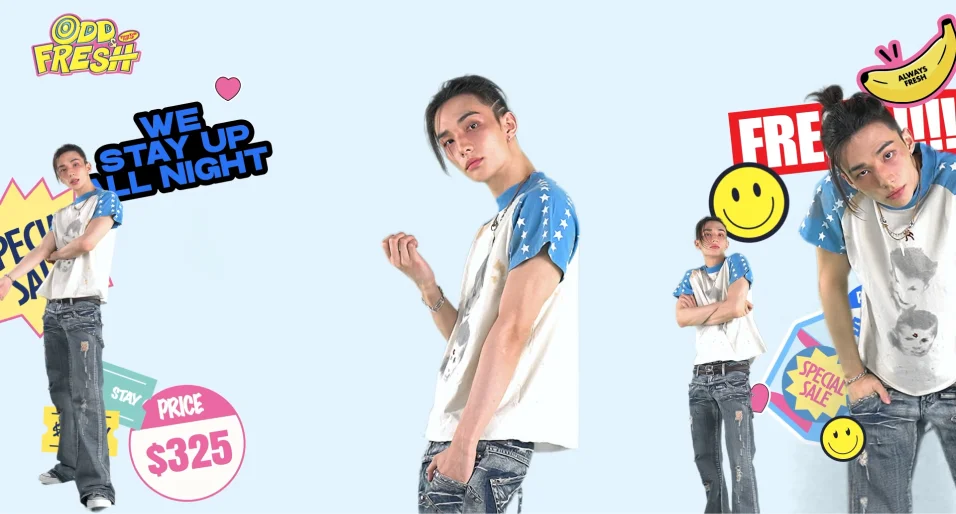
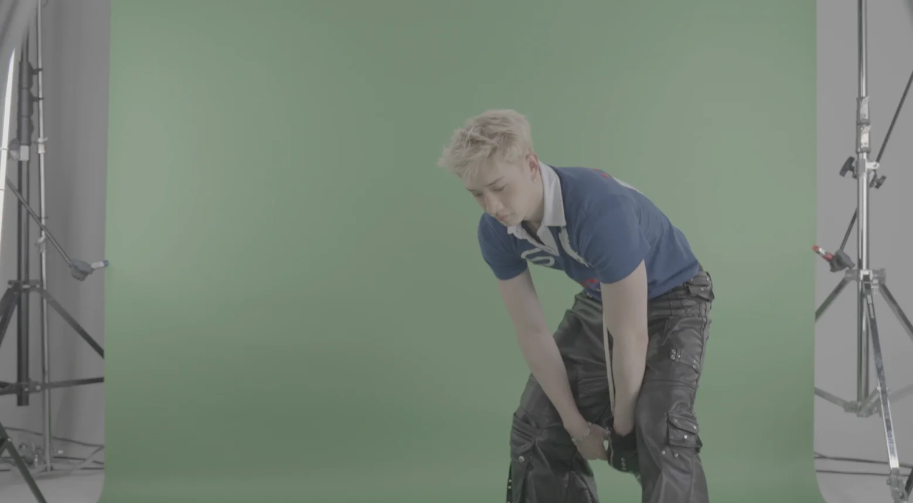
The Story Behind the Pop-up
StrayKids 멤버들이 직접 팝업에 관한 이야기를 전하는 인터뷰 영상을 제작했습니다.
아티스트의 목소리를 통해 팝업을 더욱 가까이 경험할 수 있도록 했습니다.
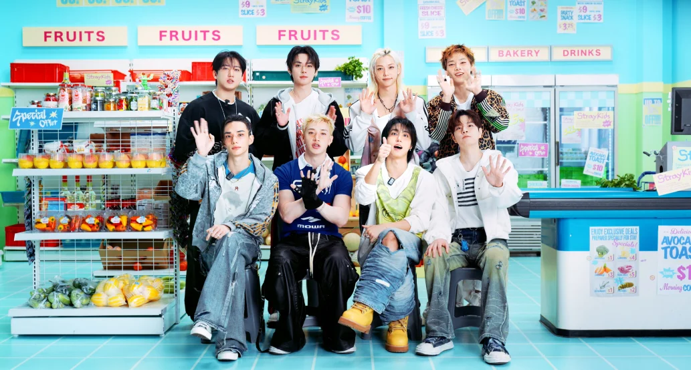
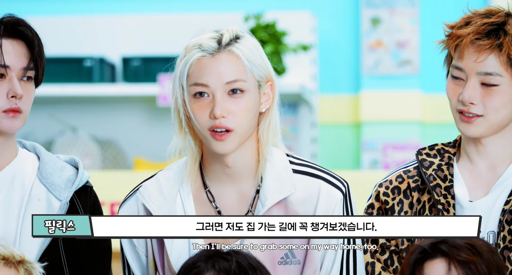
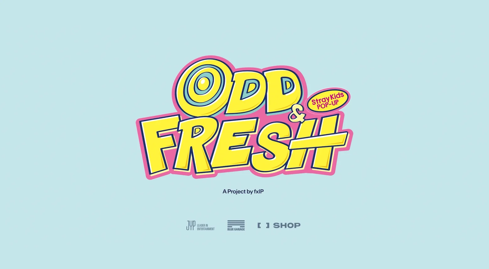
Step into the Experience
StrayKids 멤버들과 함께 사진을 촬영할 수 있도록 CCTV 콘셉트의 크로마키 콘텐츠를 제작했습니다.
화면 속 아티스트와 팬이 하나의 프레임에서 만나는 참여형 경험을 구현했습니다.
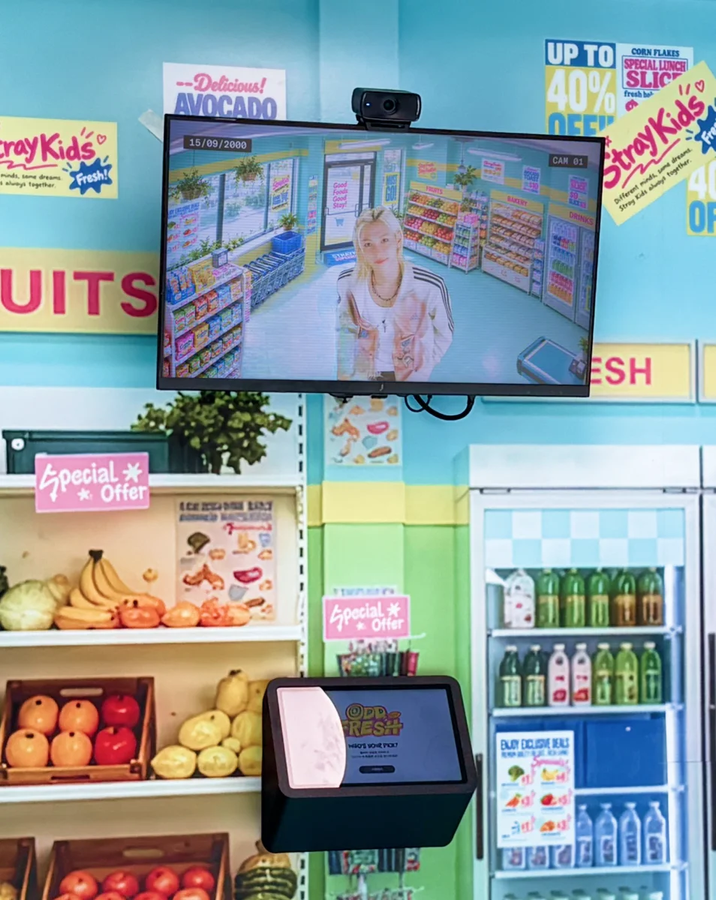
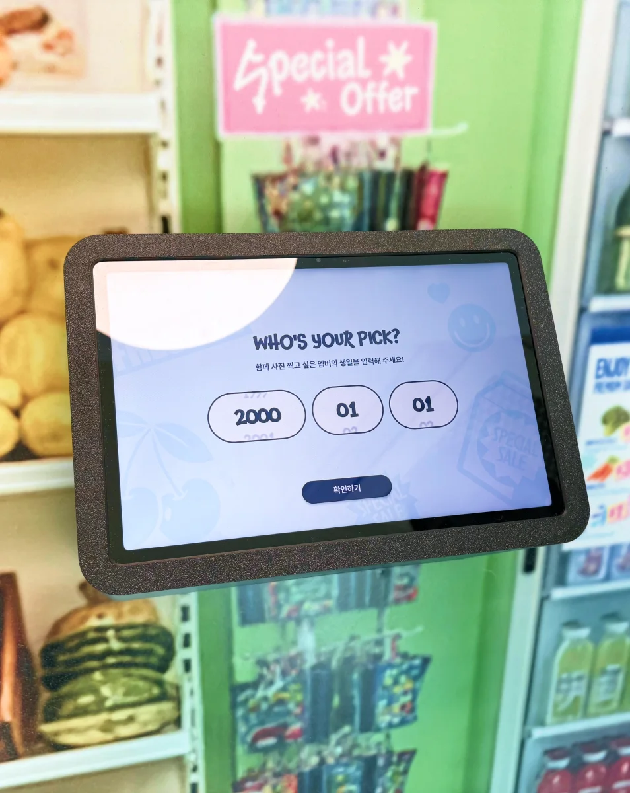
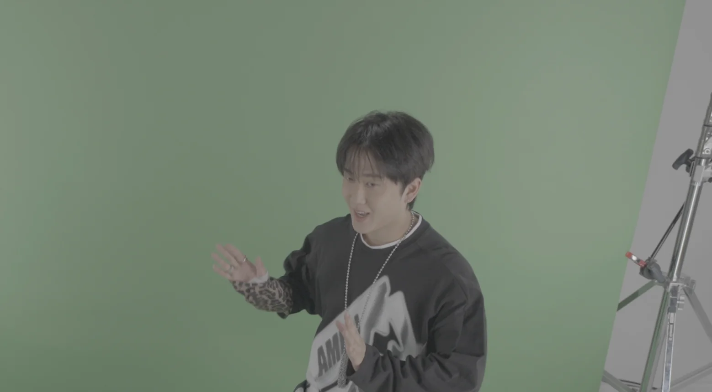